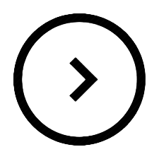
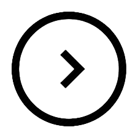

.png)
.png)
.png) 

2013–2014: Messidependencia
Barcelona had virtually secured their La Liga title by the start of 2013, eventually equalling Real Madrid's 100-point record of the previous season. However, their performances deteriorated in the second half of the 2012–13 campaign, concurrently with Vilanova's absence due to ill health.[144] After losing successive Clásicos, including the Copa del Rey semi-finals, they were nearly eliminated in the first knockout round of the Champions League by AC Milan, but a revival of form in the second leg led to a 4–0 comeback, with two goals and an assist from Messi.[145] Now in his ninth senior season with Barcelona, Messi signed a new contract on 7 February, committing himself to the club through 2018, while his fixed wage rose to €13 million.[146][147] He wore the captain's armband for the first time a month later, on 17 March, in a league match against Rayo Vallecano; by then, he had become the team's tactical focal point to a degree that was arguably rivalled only by former Barcelona players Josep Samitier, László Kubala and Johan Cruyff.[148] Since his evolution into a false nine three years earlier, his input into the team's attack had increased; from 24% in their treble-winning campaign, his goal contribution rose to more than 40% that season.[149]
"In Leo we are talking about the best player in the world and when things are not going well you have to use him. Even if he is half lame, his presence on the pitch is enough to lift us and our play in general."
– Defender Gerard Piqué explains Barcelona's reliance on an unfit Messi against Paris Saint-Germain in April 2013.[150]
After four largely injury-free seasons, the muscular injuries that had previously plagued Messi reoccurred. After he suffered a hamstring strain on 2 April, during the first quarter-final against Paris Saint-Germain (PSG), his appearances became sporadic. In the second leg against PSG, with an underperforming Barcelona down a goal, Messi came off the bench in the second half and within nine minutes helped create their game-tying goal, which allowed them to progress to the semi-finals. Still unfit, he proved ineffective during the first leg against Bayern Munich and was unable to play at all during the second, as Barcelona were defeated 7–0 on aggregate by the eventual champions.[151] These matches gave credence to the notion of Messidependencia, Barcelona's perceived tactical and psychological dependence on their star player.[151]
Messi during a game against Almería in 2014
Messi continued to struggle with injury throughout 2013, eventually parting ways with his long-time personal physiotherapist.[152] Further damage to his hamstring sustained on 12 May ended his goalscoring streak of 21 consecutive league games, a worldwide record; he had netted 33 goals during his run, including a four-goal display against Osasuna, while becoming the first player to score consecutively against all 19 opposition teams in La Liga.[153][154] With 60 goals in all competitions, including 46 goals in La Liga, he finished the campaign as league top scorer in Spain and Europe for the second consecutive year, becoming the first player in history to win the European Golden Shoe three times.[155][156] Following an irregular start to the new season under manager Gerardo Martino, formerly of his boyhood club Newell's Old Boys, Messi suffered his fifth injury of 2013 when he tore his hamstring on 10 November, leaving him sidelined for two months.[157][158] Despite his injuries, he was voted runner-up for the FIFA Ballon d'Or, relinquishing the award after a four-year monopoly to Cristiano Ronaldo.[159]
During the second half of the 2013–14 season, doubts persisted over Messi's form, leading to a perception among the culés that he was reserving himself for the 2014 FIFA World Cup. Statistically, his contribution of goals, shots, and passes had dropped significantly compared to previous seasons.[160][161] He still managed to break two longstanding records in a span of seven days: a hat-trick on 16 March against Osasuna saw him overtake Paulino Alcántara's 369 goals to become Barcelona's top goalscorer in all competitions including friendlies, while another hat-trick against Real Madrid on 23 March made him the all-time top scorer in El Clásico, ahead of the 18 goals scored by former Real Madrid player Alfredo Di Stéfano.[160][162] Messi finished the campaign with his worst output in five seasons, though he still managed to score 41 goals in all competitions.[161][163] For the first time in five years, Barcelona ended the season without a major trophy; they were defeated in the Copa del Rey final by Real Madrid and lost the league in the last game to Atlético Madrid, causing Messi to be booed by sections of fans at the Camp Nou.[164] After prolonged speculation over his future with the club, Messi signed a new contract on 19 May 2014, only a year after his last contractual update; his salary increased to €20 million, or €36 million before taxes, the highest wage in the sport.[165] It was reported that Vilanova played a key role in convincing Messi to stay[166] amid strong interest from José Mourinho's Chelsea.[167]